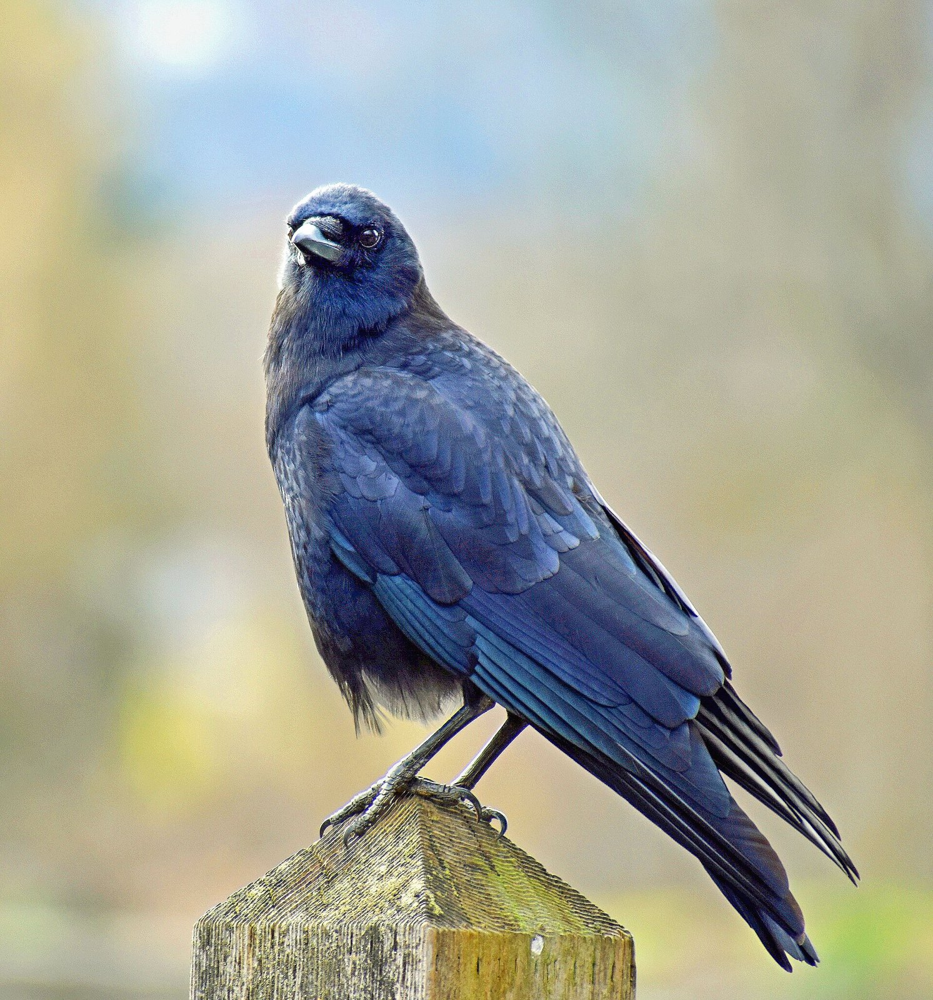
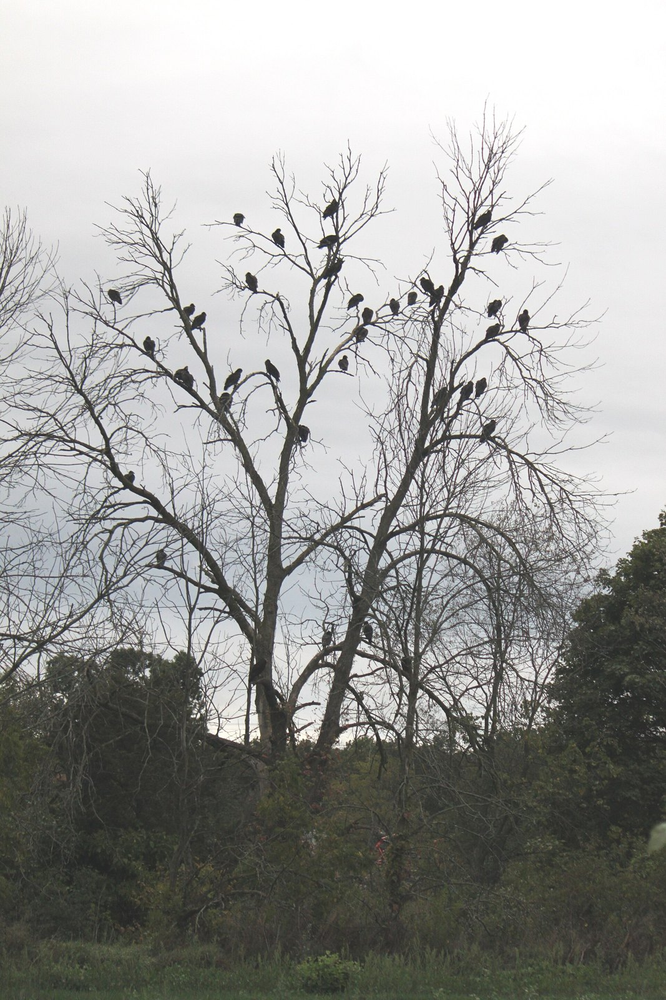

CURIOSIDADES DE LA VIDA•EP. 02
¿SABÍAS QUELOS CUERVOS
PUEDEN RECORDARTU CARA
DURANTE AÑOS?
EN UN EXPERIMENTO,UNOS CIENTÍFICOS
CON UNA MÁSCARAATRAPARON
A VARIOSCUERVOS.
AÑOS DESPUÉS,LOS CUERVOS
SEGUÍAN GRAZNANDOA CUALQUIERA
QUE LLEVARAESA MÁSCARA.
Y HAY ALGO TODAVÍAMÁS SORPRENDENTE.
ENSEÑARON A OTROSCUERVOS A RECONOCERLA,
INCLUSO A LOS QUENUNCA LA HABÍAN VISTO.
ASÍ QUE MEJORLLÉVATE BIEN CON ELLOS.
¿CONOCÍASESTE SECRETO?